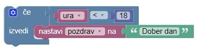

Pogojni stavki
Kadar pišemo programe se pogosto zgodu, da želimo izvesti različna dejanja za različne odločitve. Da to storimo lahko v naši kodi uporabimo pogojne stavke.
Pogojni stavki se uporabljajo za izvajanje različnih dejanj, ki temeljijo na različnih pogojih.
V JavaScriptu poznamo naslednje pogojne stavke:
- "če" če želimo določiti blok kode, ki naj se izvede, če je določen pogoj resničen.
- "sicer" da določimo blok kode, ki naj se izvede, če je isti pogoj napačenen.
- "sicer če" da določimo nov pogoj za preizkus (test), če je prvi pogoj napačen.
- "Zamenjava" da določimo več nadomestnih blokov kode, ki jih je treba izvesti.
Z stavkom če določite blok kode JavaScript, ki naj se izvede, če je pogoj resničen.
Sintaksa:
če (pogoj) { //blok kode, ki se izvede, če je pogoj resničen }
Upoštevajte, da stavek "če" zapišemo z malimi črkami. Velike črke (Če ali ČE) bodo ustvarile napako.
Primer:
Če je ura manj kot 18:00, pozdravite "Dober dan":
če (ura <18) { pozdrav = "Dober dan"; }
Rezultat pozdrava bo: Dober dan
Z Blocklyjem bi ta primer rešili tako:

Stavek sicer (ang. else)
S stavkom sicer določite blok kode, ki naj se izvede, če je pogoj neresničen.
če (pogoj) { // blok kode, ki se izvede, če je pogoj resničen } sicer { // blok kode, ki se izvede, če je pogoj neresničen }
Primer:
Če je ura manj kot 18, ustvarite pozdrav "Dober dan", drugače "Dober večer":
če (ura <18) {<br> pozdrav = "Dober dan";<br> } sicer {<br> pozdrav = "Dober večer";<br> }
Rezultat pozdrava bo: Dober dan
Vaja 1/2.
Napiši program, ki primerja dve spremenljivki 'a' in 'b' in izpiše večjo.
Vaja 2/2.
Napiši program, ki bo izpisal 'neparno', če je spremenljivka 'a' liho število in 'parno' če je spremenljivka'a' sodo število.
Stavek sicer če (ang. else if)
S stavkom sicer če določite nov pogoj, če je prvi pogoj napačen.
Sintaksa:
če (pogoj1) { // blok kode, ki se izvede, če je pogoj1 resničen } sicer če (pogoj2) { // blok kode, ki se izvede, //če je pogoj1 neresničen in pogoj2 resničen } sicer { // blok kode, ki se izvede, //če je pogoj1 neresničen in pogoj2 neresničen
Primer:
Če je ura manj od 10:00, ustvarite pozdrav "Dobro jutro", če ni, ura pa je vseeno manj kot 20:00, ustvarite pozdrav "Dober dan", sicer pa "Dober večer":
če (čas <10) { pozdrav = "Dobro jutro"; } sicer če (čas <20) { pozdrav = "Dober dan"; } sicer { pozdrav = "Dober večer"; }Rezultat pozdrava bo: Dober dan
Rešitev: